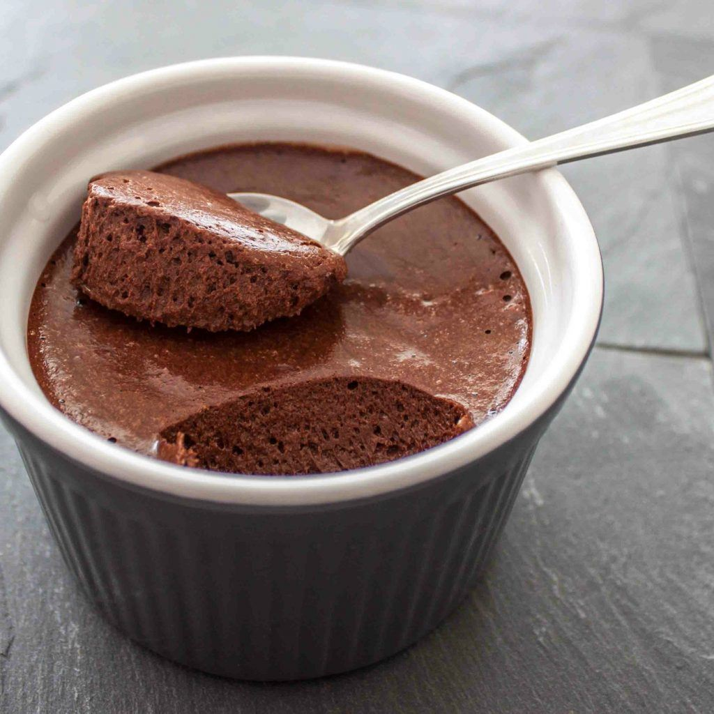

MOUSSE DE CHOCOLATE

Mousse de chocolate esponjoso
Creo que ésta es la receta de postre más fácil de hacer y requiere pocos ingredientes, si además hay una batidora eléctrica es todavía más rápida. El trabajo está más que todo en subir las claras a nieve.
Existen algunas variaciones con más crema de leche, pero no vale la pena añadir más grasa a ésta receta que es de sólo huevos y chocolate.
Como todas las recetas, la mitad del éxito está en los ingredientes, por lo que es importante conseguir un chocolate negro de buena calidad, de preferencia con cacao > 60%. A diferencia de otros postres, éste no tiene medidas muy rigurosas, un poco más de chocolate, o un huevo más no cambian tanto la consistencia.
Ingredientes para 4 personas
- Huevos (4)
- Chocolate negro (150 g)
- Azúcar pulverizado (40 g)
- Vainilla (unas gotas)
Preparación (20 min + 1 h de nevera)
- Derretir el chocolate a baño maría con un chorrito de leche y/o un poco de mantequilla.
- Separar las claras de las yemas y llevar las claras a punto de nieve. Se pueden utlizar 1 o 2 yemas de menos (usar en algo más) para obtener una consistencia más esponjosa.
- Revolver las yemas y mezclarlas con el azúcar pulverizado y la vainilla.
- Dejar enfriar un poco el chocolate y mezclar con las yemas.
- Incorporar las claras poco a poco con la mezcla de chocolate y yemas.
- Cuando la mezcla esté homogénea, verter en moldes pequeños y llevar a la nevera durante 1 h.